Salmon quasi-mapping with limma-voom analysis
Last updated: 2020-02-24
Checks: 7 0
Knit directory: amnio-cell-free-RNA/
This reproducible R Markdown analysis was created with workflowr (version 1.6.0). The Checks tab describes the reproducibility checks that were applied when the results were created. The Past versions tab lists the development history.
Great! Since the R Markdown file has been committed to the Git repository, you know the exact version of the code that produced these results.
Great job! The global environment was empty. Objects defined in the global environment can affect the analysis in your R Markdown file in unknown ways. For reproduciblity it’s best to always run the code in an empty environment.
The command set.seed(20200224) was run prior to running the code in the R Markdown file. Setting a seed ensures that any results that rely on randomness, e.g. subsampling or permutations, are reproducible.
Great job! Recording the operating system, R version, and package versions is critical for reproducibility.
Nice! There were no cached chunks for this analysis, so you can be confident that you successfully produced the results during this run.
Great job! Using relative paths to the files within your workflowr project makes it easier to run your code on other machines.
Great! You are using Git for version control. Tracking code development and connecting the code version to the results is critical for reproducibility. The version displayed above was the version of the Git repository at the time these results were generated.
Note that you need to be careful to ensure that all relevant files for the analysis have been committed to Git prior to generating the results (you can use wflow_publish or wflow_git_commit). workflowr only checks the R Markdown file, but you know if there are other scripts or data files that it depends on. Below is the status of the Git repository when the results were generated:
Ignored files:
Ignored: .Rhistory
Ignored: .Rproj.user/
Ignored: code/salmon-limma-voom.nb.html
Ignored: data/190717_A00692_0021_AHLLHFDSXX/
Ignored: data/GONE4.10.13.txt
Ignored: data/HK_genes.txt
Ignored: data/IPA molecule summary.xls
Ignored: data/IPA-molecule-summary.csv
Ignored: data/brain-development-geneset.txt
Ignored: data/joindata.csv
Ignored: data/metadata.csv
Ignored: data/samples.csv
Ignored: output/c2Ens.RData
Ignored: output/c5Ens.RData
Ignored: output/exclude-CMV11/
Ignored: output/hEns.RData
Ignored: output/keggEns.RData
Ignored: output/salmon-limma-voom-c5Cam.csv
Ignored: output/salmon-limma-voom.Rmd/
Ignored: output/salmon-limma-voom.csv
Ignored: output/salmon-ruvseq-edger.csv
Untracked files:
Untracked: analysis/salmon-limma-voom-exclude-CMV11.Rmd
Untracked: analysis/salmon-ruvseq-edger.Rmd
Note that any generated files, e.g. HTML, png, CSS, etc., are not included in this status report because it is ok for generated content to have uncommitted changes.
These are the previous versions of the R Markdown and HTML files. If you’ve configured a remote Git repository (see ?wflow_git_remote), click on the hyperlinks in the table below to view them.
| File | Version | Author | Date | Message |
|---|---|---|---|---|
| Rmd | 0cc9294 | Jovana Maksimovic | 2020-02-24 | wflow_publish(“analysis/salmon-limma-voom.Rmd”) |
Warning: multiple methods tables found for 'splitAsList'Data import
The data was quasi-mapped and quantified using Salmon (v0.14.1) with the GENCODE (v31) human (hg38) transcriptome and decoy sequences. The mapping statistics can be found here. There appeared to be an issue with adapter contamination, with all samples having relatively low mapping percentages.
Load sample information and file names.
[1] TRUELoad all the metadata and associate with samples.
Date.x Amniocollectiodate Tube.ID Record.ID Site.x matchedpair
10 19/03/2018 20/11/2017 63121013 76015429 Leuven L1
11 22/01/2018 22/01/2018 63184810 63460885 Leuven L1
12 6/02/2018 9/10/2007 63148015 60667570 Leuven L2
13 15/11/2017 15/11/2017 63114616 74350539 Leuven L2
14 11/01/2018 11/09/2017 62987267 77297935 Leuven L3
15 2-Jan 2/01/2018 63144744 60308517 Leuven L3
GA.at.amnio Sex CMVresult Site.y Date.y Location AFS cell CMV.result
10 21 F pos LVN 19/03/2018 Olaf Bag 3,4 2 NA
11 21 F neg LVN 22/01/2018 Olaf Bag 2,3 2 NA
12 23 F neg LVN 6/02/2018 Olaf Bag 4 2 NA
13 23 F pos LVN 15/11/2017 Olaf bag 1,2 2 NA
14 22 F pos LVN 11/01/2018 Olaf bag 1 2 NA
15 21 F neg LVN 2-Jan Olaf bag 1,4 2 NA
GA ID.post.extraction TestResult.x MatchedPair.x TestResult.y MatchedPair.y
10 NA CMV30 pos L1 pos L1
11 NA CMV31 neg L1 neg L1
12 NA CMV8 neg L2 neg L2
13 NA CMV9 pos L2 pos L2
14 NA CMV26 pos L3 pos L3
15 NA CMV27 neg L3 neg L3Associate transcripts with gene IDs for gene-level summarization.
DataFrame with 216741 rows and 2 columns
tx_id gene_id
<character> <character>
1 ENST00000000233 ENSG00000004059
2 ENST00000000412 ENSG00000003056
3 ENST00000000442 ENSG00000173153
4 ENST00000001008 ENSG00000004478
5 ENST00000001146 ENSG00000003137
... ... ...
216737 LRG_96t1 LRG_96
216738 LRG_97t1 LRG_97
216739 LRG_98t1 LRG_98
216740 LRG_992t1 LRG_992
216741 LRG_99t1 LRG_99Import gene-level counts and abundances.
reading in files with read_tsv1 2 3 4 5 6 7 8 9 10 11 12 13 14 15 16 17 18 19
transcripts missing from tx2gene: 29910
summarizing abundance
summarizing counts
summarizing length CMV30 CMV31 CMV8 CMV9 CMV26 CMV27
ENSG00000000003 386.52256 224.523956 297.490544 353.908869 226.3633473 233.9592
ENSG00000000005 0.00000 0.000000 3.508693 0.000000 0.7092862 0.0000
ENSG00000000419 92.68908 121.495523 118.312016 111.601576 126.0970532 113.8304
ENSG00000000457 915.45131 481.770628 366.336042 324.458094 431.1658528 452.7294
ENSG00000000460 142.00620 162.975868 113.499596 143.222437 167.2503924 84.8001
ENSG00000000938 23.43855 7.318385 3.342842 1.806355 3.7408011 0.0000
CMV14 CMV15 CMV20 CMV21 CMV1 CMV2
ENSG00000000003 456.588498 210.401839 237.87521 237.85260 184.91417 227.6996
ENSG00000000005 12.316316 1.962694 0.00000 0.00000 0.00000 0.0000
ENSG00000000419 204.954461 163.766157 103.43035 128.61849 101.72236 125.0892
ENSG00000000457 536.341689 386.877856 495.25063 356.57552 274.74878 292.4993
ENSG00000000460 98.549518 139.387128 186.61793 105.84671 65.65061 146.6550
ENSG00000000938 8.363153 3.027977 61.81275 4.05079 11.48371 0.0000
CMV3 CMV4 CMV10 CMV11 CMV18 CMV19
ENSG00000000003 160.86502 178.279803 176.490927 59.86062 472.486967 402.945253
ENSG00000000005 0.00000 0.000000 0.000000 0.00000 0.000000 1.246501
ENSG00000000419 82.22355 60.438725 122.717766 14.15768 120.775574 119.136139
ENSG00000000457 261.02293 219.208202 242.769344 166.53447 509.784765 320.499382
ENSG00000000460 18.77426 71.027185 51.970279 41.43561 66.382734 123.584072
ENSG00000000938 13.59563 6.052592 5.838036 0.00000 9.451101 0.000000
CMV35
ENSG00000000003 163.075330
ENSG00000000005 0.000000
ENSG00000000419 81.539653
ENSG00000000457 310.051914
ENSG00000000460 69.177481
ENSG00000000938 9.419817Set up DGElist object for downstream analysis.
An object of class "DGEList"
$counts
CMV30 CMV31 CMV8 CMV9 CMV26 CMV27
ENSG00000000003 386.52256 224.5240 297.490544 353.9089 226.3633473 233.9592
ENSG00000000005 0.00000 0.0000 3.508693 0.0000 0.7092862 0.0000
ENSG00000000419 92.68908 121.4955 118.312016 111.6016 126.0970532 113.8304
ENSG00000000457 915.45131 481.7706 366.336042 324.4581 431.1658528 452.7294
ENSG00000000460 142.00620 162.9759 113.499596 143.2224 167.2503924 84.8001
CMV14 CMV15 CMV20 CMV21 CMV1 CMV2
ENSG00000000003 456.58850 210.401839 237.8752 237.8526 184.91417 227.6996
ENSG00000000005 12.31632 1.962694 0.0000 0.0000 0.00000 0.0000
ENSG00000000419 204.95446 163.766157 103.4304 128.6185 101.72236 125.0892
ENSG00000000457 536.34169 386.877856 495.2506 356.5755 274.74878 292.4993
ENSG00000000460 98.54952 139.387128 186.6179 105.8467 65.65061 146.6550
CMV3 CMV4 CMV10 CMV11 CMV18 CMV19
ENSG00000000003 160.86502 178.27980 176.49093 59.86062 472.48697 402.945253
ENSG00000000005 0.00000 0.00000 0.00000 0.00000 0.00000 1.246501
ENSG00000000419 82.22355 60.43872 122.71777 14.15768 120.77557 119.136139
ENSG00000000457 261.02293 219.20820 242.76934 166.53447 509.78477 320.499382
ENSG00000000460 18.77426 71.02718 51.97028 41.43561 66.38273 123.584072
CMV35
ENSG00000000003 163.07533
ENSG00000000005 0.00000
ENSG00000000419 81.53965
ENSG00000000457 310.05191
ENSG00000000460 69.17748
57258 more rows ...
$samples
group lib.size norm.factors
CMV30 1 12910571 1
CMV31 1 9882210 1
CMV8 1 10018352 1
CMV9 1 9653680 1
CMV26 1 8468332 1
14 more rows ...
$genes
DataFrame with 57263 rows and 4 columns
gene_id symbol entrezid length
<character> <character> <integer> <numeric>
1 ENSG00000000003 TSPAN6 7105 1689.644
2 ENSG00000000005 TNMD 64102 786.943850929716
3 ENSG00000000419 DPM1 8813 807.897872792934
4 ENSG00000000457 SCYL3 57147 3432.37826706618
5 ENSG00000000460 C1orf112 55732 1817.52182346094
... ... ... ... ...
57259 ENSG00000283695 CTD-2331H12.9 NA 62
57260 ENSG00000283696 RP11-122G18.12 NA 916.754954851642
57261 ENSG00000283697 RP5-937E21.8 101928917 1332.26276351927
57262 ENSG00000283698 RP11-606M12.1 NA 378.473684210526
57263 ENSG00000283699 MIR4481 100616320 61
$group
[1] "pos" "neg" "neg" "pos" "pos" "neg" "neg" "pos" "pos" "neg" "pos" "neg"
[13] "neg" "pos" "neg" "pos" "neg" "pos" "neg"Quality control
Genes that do not have an adequate number of reads in any sample should be filtered out prior to downstream analyses. From a biological perspective, genes that are not expressed at a biologically meaningful level in any condition are not of interest. Statistically, we get a better estimate of the mean-variance relationship in the data and reduce the number of statistical tests that are performes during differential expression analyses.
Filter out lowly expressed genes and calculate TMM normalisation factors.
An object of class "DGEList"
$counts
CMV30 CMV31 CMV8 CMV9 CMV26 CMV27
ENSG00000000003 386.52256 224.5240 297.4905 353.9089 226.3633 233.9592
ENSG00000000419 92.68908 121.4955 118.3120 111.6016 126.0971 113.8304
ENSG00000000457 915.45131 481.7706 366.3360 324.4581 431.1659 452.7294
ENSG00000000460 142.00620 162.9759 113.4996 143.2224 167.2504 84.8001
ENSG00000000971 79.66310 191.0344 149.0552 161.9728 115.3465 115.7292
CMV14 CMV15 CMV20 CMV21 CMV1 CMV2
ENSG00000000003 456.58850 210.4018 237.8752 237.8526 184.91417 227.69959
ENSG00000000419 204.95446 163.7662 103.4304 128.6185 101.72236 125.08918
ENSG00000000457 536.34169 386.8779 495.2506 356.5755 274.74878 292.49927
ENSG00000000460 98.54952 139.3871 186.6179 105.8467 65.65061 146.65504
ENSG00000000971 150.19787 261.9801 152.3682 112.5239 146.55376 74.74354
CMV3 CMV4 CMV10 CMV11 CMV18 CMV19
ENSG00000000003 160.86502 178.27980 176.49093 59.86062 472.48697 402.94525
ENSG00000000419 82.22355 60.43872 122.71777 14.15768 120.77557 119.13614
ENSG00000000457 261.02293 219.20820 242.76934 166.53447 509.78477 320.49938
ENSG00000000460 18.77426 71.02718 51.97028 41.43561 66.38273 123.58407
ENSG00000000971 32.50240 39.26097 111.95412 71.51983 51.96915 77.24921
CMV35
ENSG00000000003 163.07533
ENSG00000000419 81.53965
ENSG00000000457 310.05191
ENSG00000000460 69.17748
ENSG00000000971 80.16480
14584 more rows ...
$samples
group lib.size norm.factors
CMV30 1 12910571 1.0815278
CMV31 1 9882210 1.1051189
CMV8 1 10018352 0.9909816
CMV9 1 9653680 1.0052628
CMV26 1 8468332 1.0935360
14 more rows ...
$genes
DataFrame with 14589 rows and 4 columns
gene_id symbol entrezid length
<character> <character> <integer> <numeric>
1 ENSG00000000003 TSPAN6 7105 1689.644
2 ENSG00000000419 DPM1 8813 807.897872792934
3 ENSG00000000457 SCYL3 57147 3432.37826706618
4 ENSG00000000460 C1orf112 55732 1817.52182346094
5 ENSG00000000971 CFH 3075 3873.12799891868
... ... ... ... ...
14585 ENSG00000283512 CTD-2547E10.6 NA 298.157511004864
14586 ENSG00000283553 AL161905.1 8464 346.939041282231
14587 ENSG00000283617 AC074141.1 84765 1894.31768884708
14588 ENSG00000283620 ZNF48 197407 3021.88671259775
14589 ENSG00000283633 AC005301.9 NA 1419.873
$group
[1] "pos" "neg" "neg" "pos" "pos" "neg" "neg" "pos" "pos" "neg" "pos" "neg"
[13] "neg" "pos" "neg" "pos" "neg" "pos" "neg"Plotting the distribution log-CPM values shows that a majority of genes within each sample are either not expressed or lowly-expressed with log-CPM values that are small or negative.
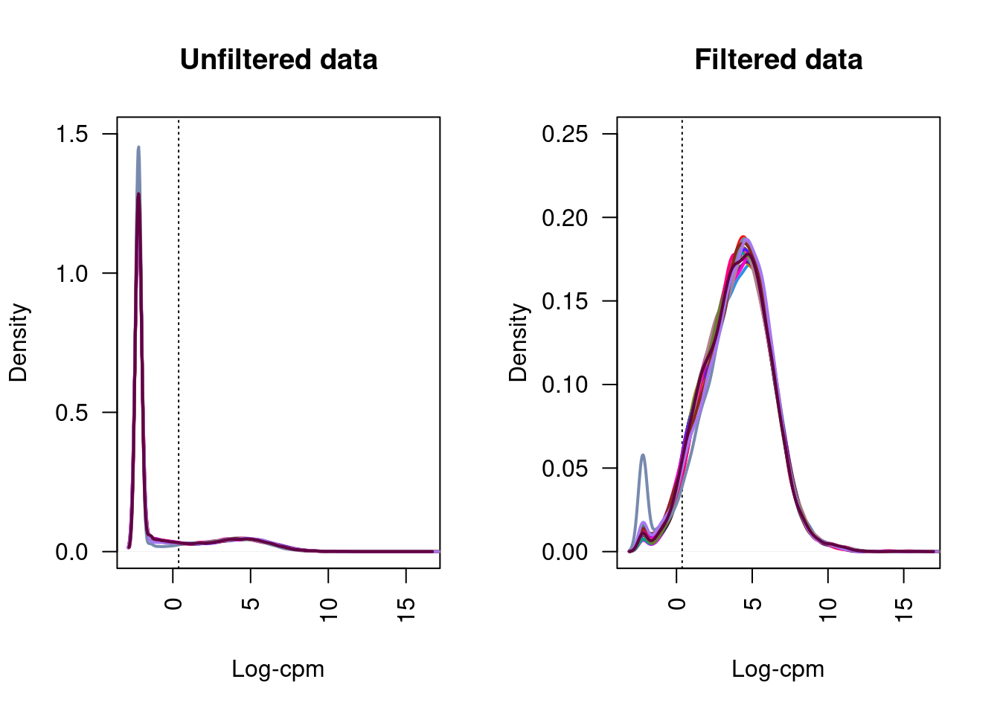
Although in excess of 30 million reads were obrained per sample, we can see that after mapping and quantification of gene expression the effective library size is less than 13 million for all samples, with most samples having an effective library size of 10 million or less. This suggests that we we likely only capturing the most abundant cfRNAs.
It is assumed that all samples should have a similar range and distribution of expression values. The unnormalised data looks fairly uniform between samples, although TMM normalisation further improves this.
The relative log expression (RLE) plot shows within sample variability, which looks reasonable for all samples, with CMV11 and CMV19 a bit more variable than the other samples. The final plot shows the mean variance relationship with some of the most variable genes indicated by their gene symbol on the plot. Despite the relatively low library sizes, the data looks to be of good quality.
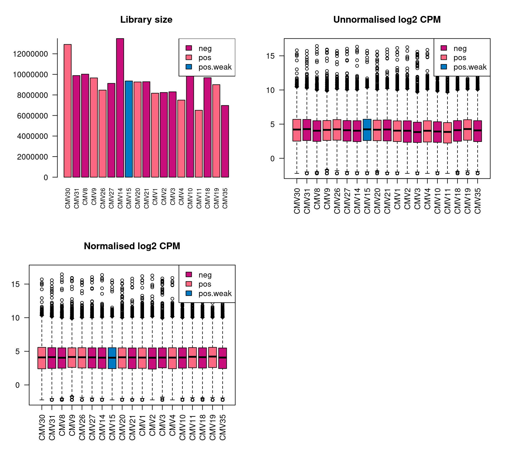
Multi-dimensional scaling (MDS) plots show the largest sources of variation in the data. They are a good way of exploring the relationships between the samples and identifying structure in the data. The following series of MDS plots examines the first four principal components. The samples are coloured by various known features of the samples such as CMV result and foetal sex. The MDS plots do not show the samples obviously clustering by any of the known features of the data. This indicates that we are unlikely to find many differentially expressed genes between CMV and normal samples.
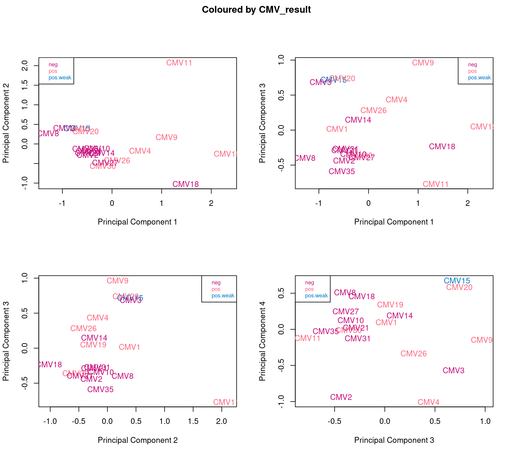 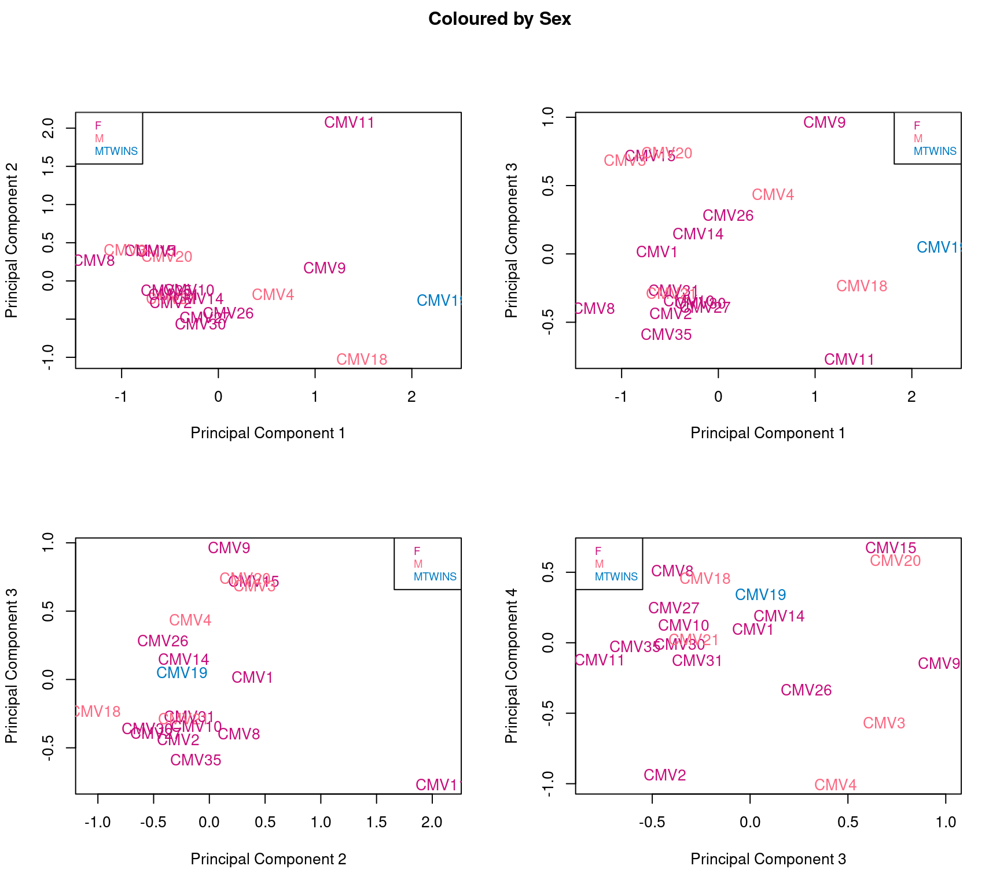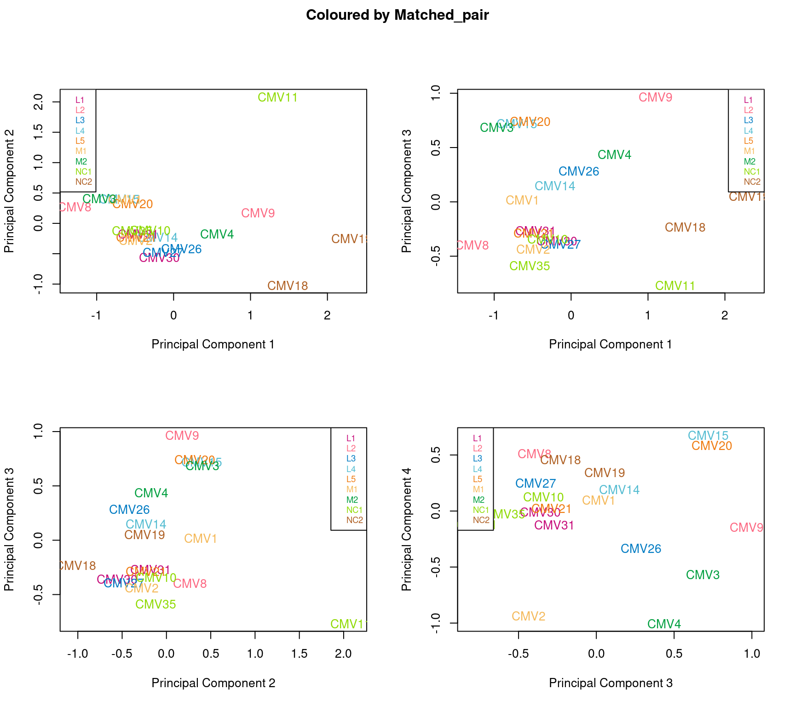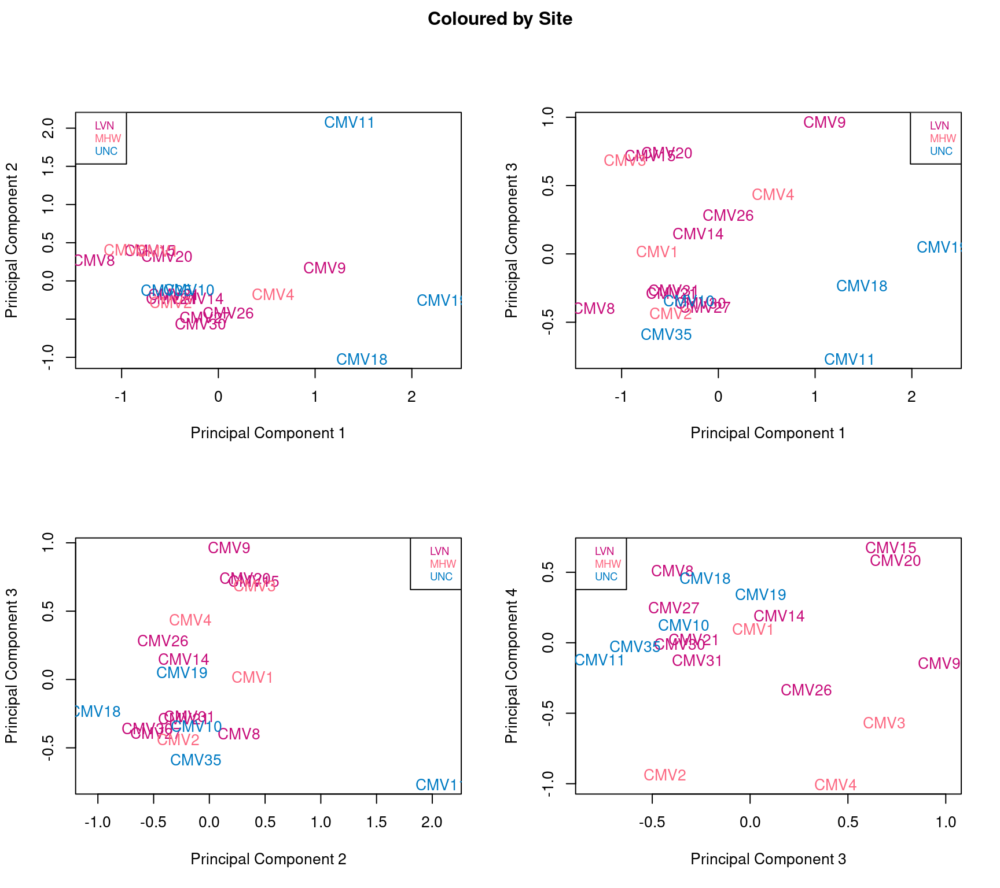
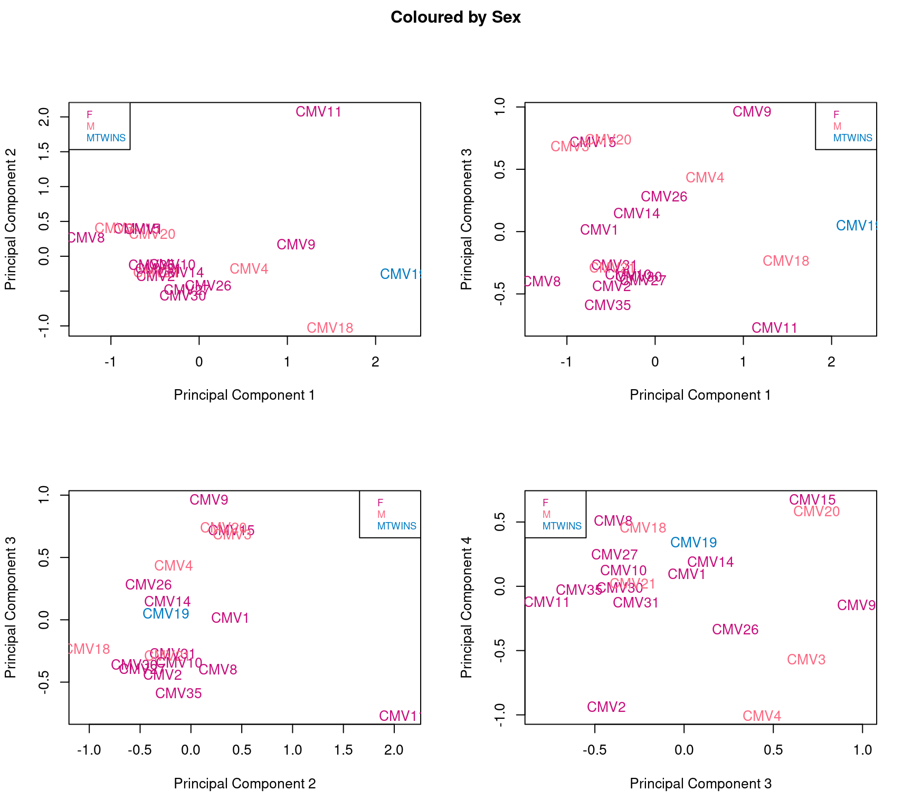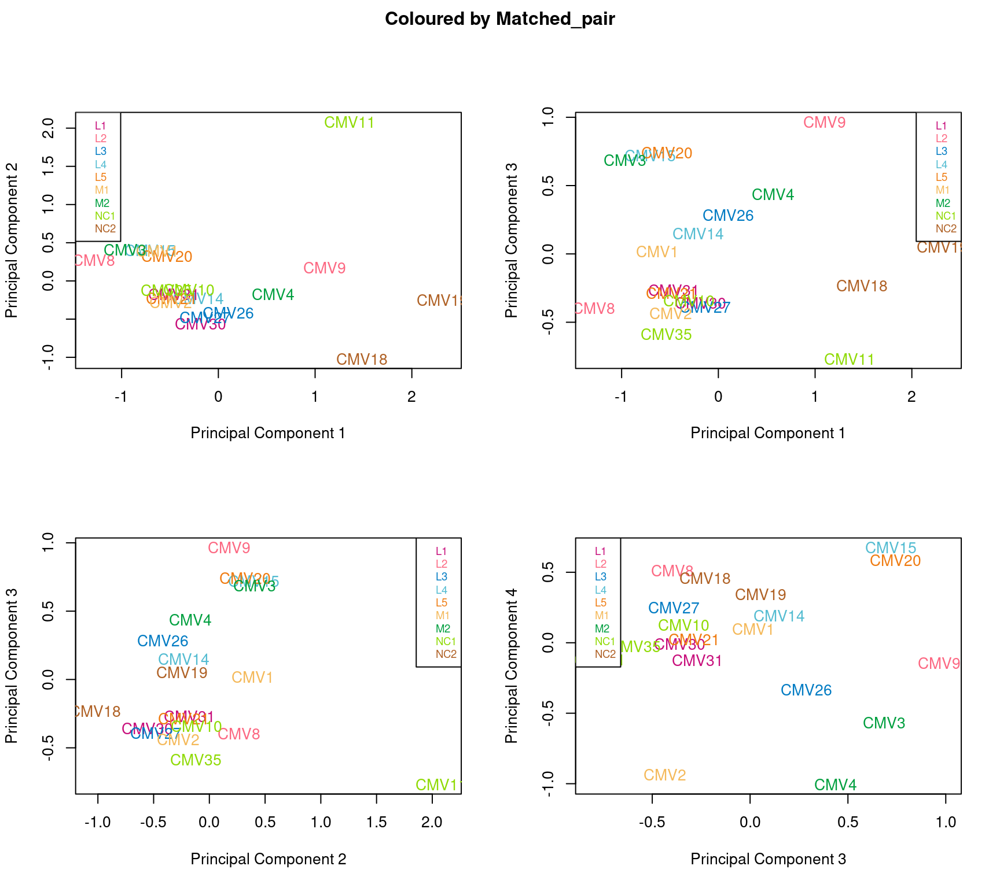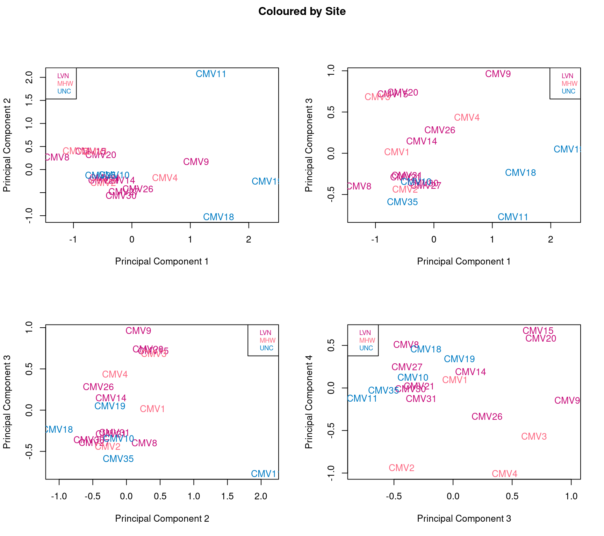
Differential expression analysis
Due to the variability in the data, the TMM normalised data was transformed using voomWithQualityWeights. This takes into account the differing library sizes and the mean variance relationship in the data as well as calculating sample-specific quality weights. Linear models were fit in limma, taking into account the voom weights. The CMV positive samples were compared to the CMV negative (normal) samples. A summary of the numbers of differentially expressed genes is shown below, as well as the top 10 differentially expressed genes. The full results tables were exported as csv files.
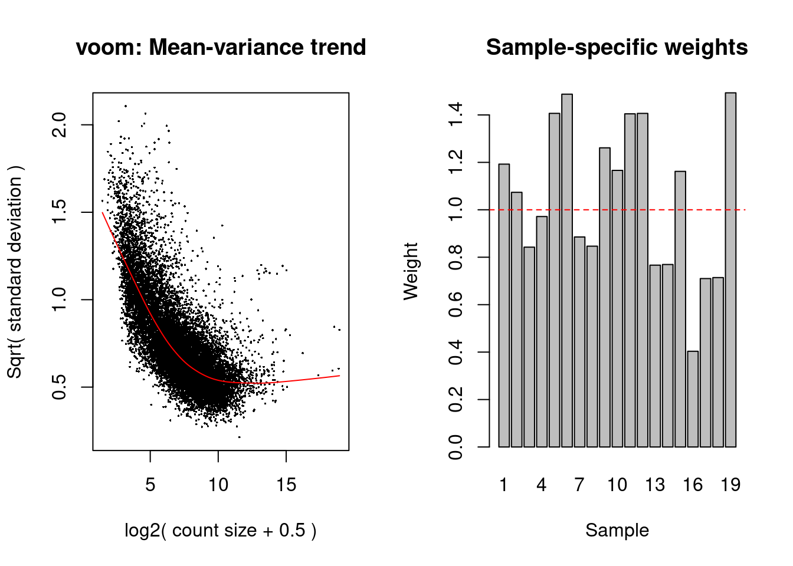
pos - neg
Down 8
NotSig 14529
Up 52 gene_id symbol entrezid length logFC AveExpr
ENSG00000138642 ENSG00000138642 HERC6 55008 3497.636 2.1031736 4.373566
ENSG00000157601 ENSG00000157601 MX1 4599 2402.462 2.0805811 6.068762
ENSG00000092421 ENSG00000092421 SEMA6A 57556 4026.812 1.6567734 2.291122
ENSG00000206503 ENSG00000206503 HLA-A 3105 1566.133 2.2928323 4.279304
ENSG00000137628 ENSG00000137628 DDX60 55601 4379.659 1.6724225 5.547886
ENSG00000107201 ENSG00000107201 DDX58 23586 4536.484 1.2499437 5.145638
ENSG00000137965 ENSG00000137965 IFI44 10561 1274.262 2.0910969 3.856450
ENSG00000177409 ENSG00000177409 SAMD9L 219285 7609.551 1.7503663 4.449816
ENSG00000163520 ENSG00000163520 FBLN2 2199 3254.679 0.9282973 3.110275
ENSG00000132530 ENSG00000132530 XAF1 54739 2746.705 2.6706712 4.118285
t P.Value adj.P.Val B
ENSG00000138642 6.911426 4.275071e-06 0.02608357 4.502573
ENSG00000157601 6.954315 5.472369e-06 0.02608357 4.304161
ENSG00000092421 7.122533 2.950582e-06 0.02608357 4.249466
ENSG00000206503 6.440452 1.074947e-05 0.02608357 3.649610
ENSG00000137628 6.387504 1.179846e-05 0.02608357 3.539348
ENSG00000107201 6.152688 1.636220e-05 0.02608357 3.210956
ENSG00000137965 6.151708 1.794517e-05 0.02608357 3.172855
ENSG00000177409 6.133569 1.829029e-05 0.02608357 3.149846
ENSG00000163520 5.995395 2.164339e-05 0.02608357 2.981407
ENSG00000132530 6.059188 2.324261e-05 0.02608357 2.923504The following plots show the expression of the top 9 ranked differentially expressed genes for CMV negative and CMV positive samples. Although there is significant variability within the groups and the log2 fold changes are not large, there are obvious differences in expression for the top ranked genes.
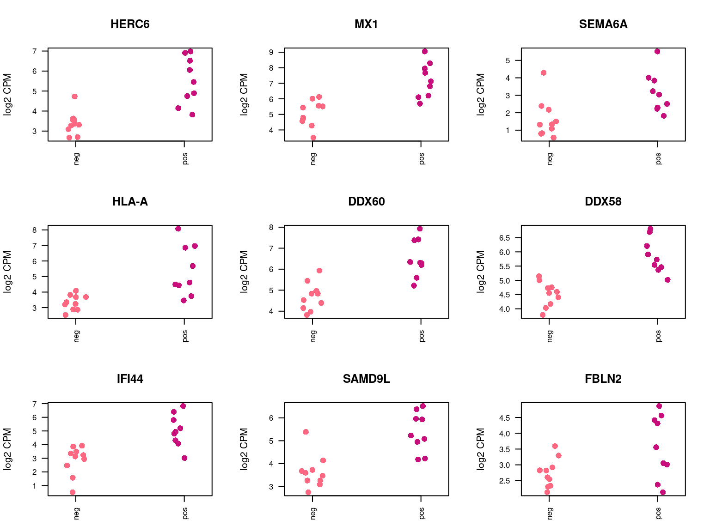
Testing for enrichment of GO categories amongst statistically significant differentially expressed genes.
Term Ont N DE P.DE
GO:0071357 cellular response to type I interferon BP 68 14 9.954812e-21
GO:0060337 type I interferon signaling pathway BP 68 14 9.954812e-21
GO:0009615 response to virus BP 224 19 2.343793e-20
GO:0034340 response to type I interferon BP 72 14 2.385326e-20
GO:0045087 innate immune response BP 578 24 1.625688e-18
GO:0051607 defense response to virus BP 165 16 4.144279e-18
GO:0009607 response to biotic stimulus BP 578 22 4.137110e-16
GO:0006952 defense response BP 947 26 9.547368e-16
GO:0043207 response to external biotic stimulus BP 549 21 2.121711e-15
GO:0051707 response to other organism BP 549 21 2.121711e-15
GO:0098542 defense response to other organism BP 268 16 9.696799e-15
GO:0019221 cytokine-mediated signaling pathway BP 523 19 1.620150e-13
GO:0006955 immune response BP 1254 26 7.415201e-13
GO:0034097 response to cytokine BP 817 20 4.565351e-11
GO:0002376 immune system process BP 1939 29 6.614558e-11
GO:0009605 response to external stimulus BP 1402 25 7.008662e-11
GO:0050688 regulation of defense response to virus BP 59 8 1.097660e-10
GO:0071345 cellular response to cytokine stimulus BP 759 19 1.104013e-10
GO:0043900 regulation of multi-organism process BP 294 13 1.868420e-10
GO:0002831 regulation of response to biotic stimulus BP 103 9 3.918840e-10Gene set testing
Gene set testing helps us to interpret the results of a differential expression analysis. The camera function performs a competitive test to assess whether the genes in a given set are highly ranked in terms of differential expression relative to genes that are not in the set. We have tested several collections of gene sets from the Broad Institute’s Molecular Signatures Database MSigDB.
Build gene set indexes.
[1] "Loading MSigDB Gene Sets ... "
[1] "Loaded gene sets for the collection h ..."
[1] "Indexed the collection h ..."
[1] "Created annotation for the collection h ..."
[1] "Loaded gene sets for the collection c2 ..."
[1] "Indexed the collection c2 ..."
[1] "Created annotation for the collection c2 ..."
[1] "Loaded gene sets for the collection c5 ..."
[1] "Indexed the collection c5 ..."
[1] "Created annotation for the collection c5 ..."
[1] "Building KEGG pathways annotation object ... "The GO gene sets consist of genes annotated by the same GO terms.
NGenes
GO_RESPONSE_TO_TYPE_I_INTERFERON 49
GO_RESPONSE_TO_INTERFERON_GAMMA 87
GO_CELLULAR_RESPONSE_TO_INTERFERON_GAMMA 72
GO_INTERFERON_GAMMA_MEDIATED_SIGNALING_PATHWAY 51
GO_ANTIGEN_PROCESSING_AND_PRESENTATION_OF_ENDOGENOUS_PEPTIDE_ANTIGEN 11
GO_ANTIGEN_PROCESSING_AND_PRESENTATION_OF_ENDOGENOUS_ANTIGEN 13
GO_DEFENSE_RESPONSE_TO_VIRUS 116
GO_MHC_PROTEIN_COMPLEX 15
GO_MHC_CLASS_I_PROTEIN_COMPLEX 9
GO_LUMENAL_SIDE_OF_MEMBRANE 23
Direction
GO_RESPONSE_TO_TYPE_I_INTERFERON Up
GO_RESPONSE_TO_INTERFERON_GAMMA Up
GO_CELLULAR_RESPONSE_TO_INTERFERON_GAMMA Up
GO_INTERFERON_GAMMA_MEDIATED_SIGNALING_PATHWAY Up
GO_ANTIGEN_PROCESSING_AND_PRESENTATION_OF_ENDOGENOUS_PEPTIDE_ANTIGEN Up
GO_ANTIGEN_PROCESSING_AND_PRESENTATION_OF_ENDOGENOUS_ANTIGEN Up
GO_DEFENSE_RESPONSE_TO_VIRUS Up
GO_MHC_PROTEIN_COMPLEX Up
GO_MHC_CLASS_I_PROTEIN_COMPLEX Up
GO_LUMENAL_SIDE_OF_MEMBRANE Up
PValue
GO_RESPONSE_TO_TYPE_I_INTERFERON 8.350445e-28
GO_RESPONSE_TO_INTERFERON_GAMMA 5.242780e-15
GO_CELLULAR_RESPONSE_TO_INTERFERON_GAMMA 2.407014e-14
GO_INTERFERON_GAMMA_MEDIATED_SIGNALING_PATHWAY 3.231235e-14
GO_ANTIGEN_PROCESSING_AND_PRESENTATION_OF_ENDOGENOUS_PEPTIDE_ANTIGEN 1.237404e-10
GO_ANTIGEN_PROCESSING_AND_PRESENTATION_OF_ENDOGENOUS_ANTIGEN 1.068379e-09
GO_DEFENSE_RESPONSE_TO_VIRUS 4.161192e-09
GO_MHC_PROTEIN_COMPLEX 7.993077e-09
GO_MHC_CLASS_I_PROTEIN_COMPLEX 4.090291e-08
GO_LUMENAL_SIDE_OF_MEMBRANE 1.658302e-07
FDR
GO_RESPONSE_TO_TYPE_I_INTERFERON 5.145544e-24
GO_RESPONSE_TO_INTERFERON_GAMMA 1.615301e-11
GO_CELLULAR_RESPONSE_TO_INTERFERON_GAMMA 4.944008e-11
GO_INTERFERON_GAMMA_MEDIATED_SIGNALING_PATHWAY 4.977717e-11
GO_ANTIGEN_PROCESSING_AND_PRESENTATION_OF_ENDOGENOUS_PEPTIDE_ANTIGEN 1.524977e-07
GO_ANTIGEN_PROCESSING_AND_PRESENTATION_OF_ENDOGENOUS_ANTIGEN 1.097225e-06
GO_DEFENSE_RESPONSE_TO_VIRUS 3.663038e-06
GO_MHC_PROTEIN_COMPLEX 6.156667e-06
GO_MHC_CLASS_I_PROTEIN_COMPLEX 2.800486e-05
GO_LUMENAL_SIDE_OF_MEMBRANE 9.670686e-05The hallmark gene sets are coherently expressed signatures derived by aggregating many MSigDB gene sets to represent well-defined biological states or processes.
NGenes Direction PValue FDR
HALLMARK_INTERFERON_ALPHA_RESPONSE 89 Up 4.426032e-42 2.213016e-40
HALLMARK_INTERFERON_GAMMA_RESPONSE 162 Up 9.141886e-32 2.285472e-30
HALLMARK_INFLAMMATORY_RESPONSE 125 Up 1.449112e-06 2.191749e-05
HALLMARK_MYC_TARGETS_V1 199 Down 1.753400e-06 2.191749e-05
HALLMARK_IL6_JAK_STAT3_SIGNALING 51 Up 4.886349e-05 4.207978e-04
HALLMARK_COMPLEMENT 154 Up 5.049573e-05 4.207978e-04
HALLMARK_TNFA_SIGNALING_VIA_NFKB 168 Up 9.345653e-05 6.675466e-04
HALLMARK_KRAS_SIGNALING_UP 142 Up 2.477798e-04 1.548623e-03
HALLMARK_ALLOGRAFT_REJECTION 115 Up 2.831891e-04 1.573273e-03
HALLMARK_OXIDATIVE_PHOSPHORYLATION 200 Down 4.262186e-04 2.131093e-03Barcode plots show the enrichment of gene sets amongst high or low ranked genes. The following barcode plots show the enrichment of the top 4 hallmark gene sets amongst the genes differentially expressed between CMV negative and CMV positive samples.
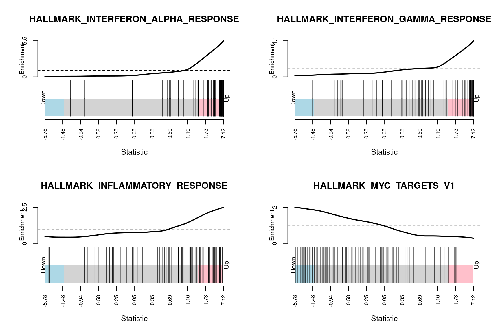
[[1]]
NULL
[[2]]
NULL
[[3]]
NULL
[[4]]
NULLThe curated gene sets are compiled from online pathway databases, publications in PubMed, and knowledge of domain experts.
NGenes Direction PValue
MOSERLE_IFNA_RESPONSE 29 Up 1.947022e-44
BROWNE_INTERFERON_RESPONSIVE_GENES 59 Up 2.587604e-39
HECKER_IFNB1_TARGETS 66 Up 7.384879e-39
FARMER_BREAST_CANCER_CLUSTER_1 19 Up 1.146996e-28
SANA_RESPONSE_TO_IFNG_UP 57 Up 1.212692e-28
REACTOME_INTERFERON_ALPHA_BETA_SIGNALING 46 Up 8.464342e-25
BOSCO_INTERFERON_INDUCED_ANTIVIRAL_MODULE 65 Up 1.054762e-24
ZHANG_INTERFERON_RESPONSE 21 Up 7.884664e-24
SANA_TNF_SIGNALING_UP 66 Up 9.759719e-24
EINAV_INTERFERON_SIGNATURE_IN_CANCER 26 Up 1.210338e-23
FDR
MOSERLE_IFNA_RESPONSE 7.293546e-41
BROWNE_INTERFERON_RESPONSIVE_GENES 4.846583e-36
HECKER_IFNB1_TARGETS 9.221252e-36
FARMER_BREAST_CANCER_CLUSTER_1 9.085486e-26
SANA_RESPONSE_TO_IFNG_UP 9.085486e-26
REACTOME_INTERFERON_ALPHA_BETA_SIGNALING 5.284571e-22
BOSCO_INTERFERON_INDUCED_ANTIVIRAL_MODULE 5.644483e-22
ZHANG_INTERFERON_RESPONSE 3.691994e-21
SANA_TNF_SIGNALING_UP 4.062212e-21
EINAV_INTERFERON_SIGNATURE_IN_CANCER 4.533925e-21The following barcode plots show the enrichment of the top 4 curated gene sets amongst the genes differentially expressed between CMV negative and CMV positive samples.
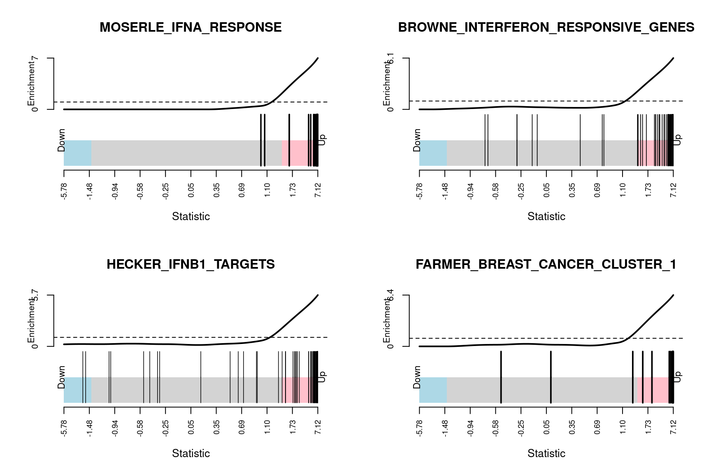
[[1]]
NULL
[[2]]
NULL
[[3]]
NULL
[[4]]
NULLThe following heatmap shows the expression level of the genes in the top ranked curated gene set across all the samples.
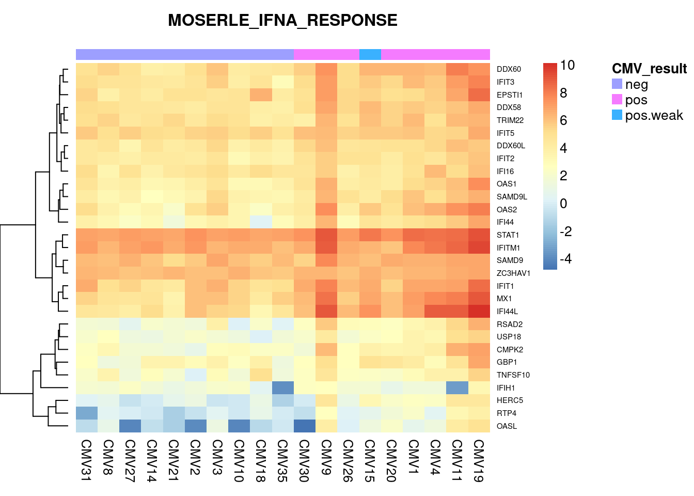
The Kegg gene sets encompass all of the pathways defined in the Kegg pathway database.
NGenes Direction PValue FDR
Autoimmune thyroid disease 13 Up 6.289662e-09 1.468262e-06
Allograft rejection 12 Up 1.009115e-08 1.468262e-06
Graft-versus-host disease 13 Up 5.311775e-08 5.152422e-06
Type I diabetes mellitus 16 Up 1.217892e-07 8.860166e-06
Antigen processing and presentation 47 Up 2.820063e-07 1.641277e-05
Ribosome 131 Down 1.831141e-06 8.881031e-05
Leishmaniasis 46 Up 2.345120e-05 9.748998e-04
Mineral absorption 39 Up 5.059974e-05 1.840566e-03
Staphylococcus aureus infection 20 Up 5.843560e-05 1.889418e-03
NOD-like receptor signaling pathway 125 Up 9.761519e-05 2.840602e-03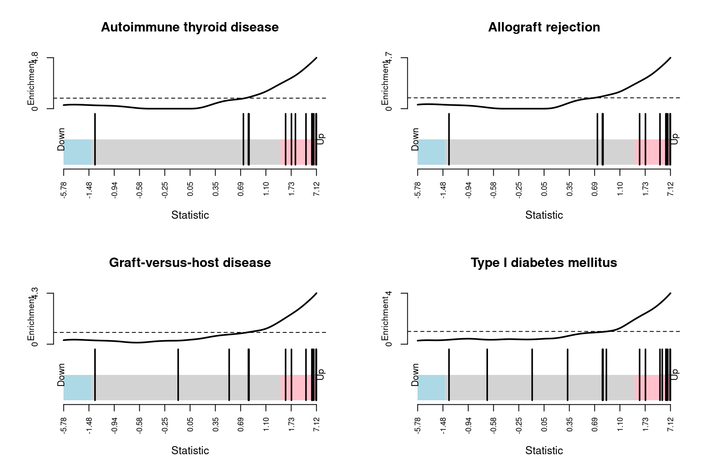
[[1]]
NULL
[[2]]
NULL
[[3]]
NULL
[[4]]
NULLThe following heatmap shows the expression level of the genes in the top ranked kegg pathway across all the samples.
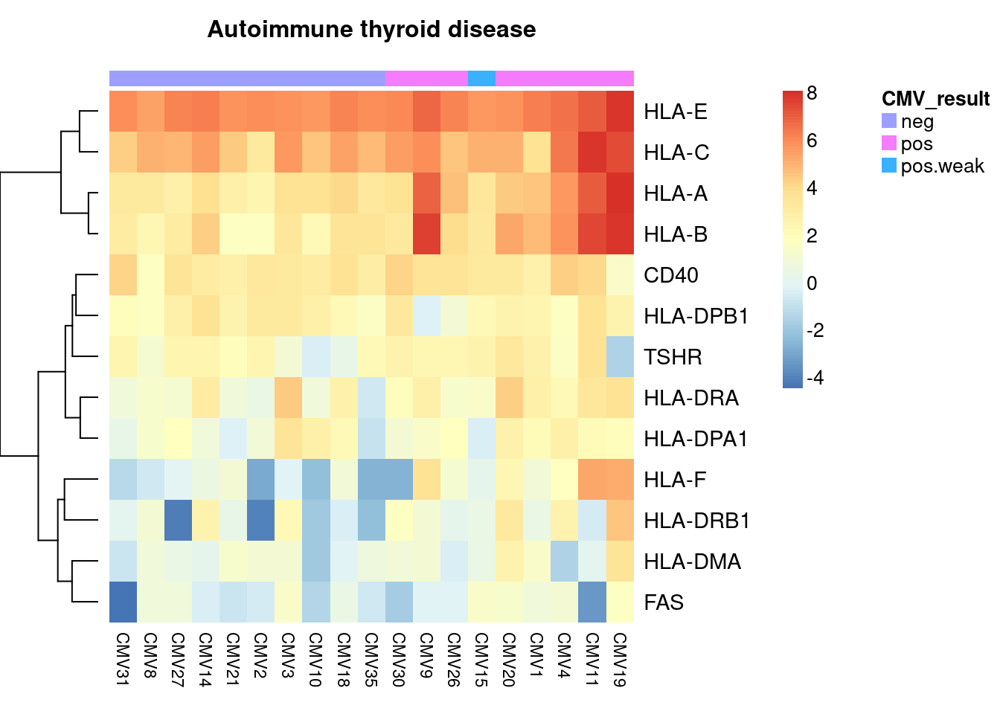
Summary
Although the effective library sizes were low, the data is generally of good quality. Due to the variability in the data, we did not find many individually significant differentially expressed genes; 60 at FDR < 0.1. The significant genes were enriched for GO terms associated with interferon response and similar. Further gene set testing results indicate an upregulation of interferon response genes in the CMV positive samples, relative to the “normal” samples, which is consistent with the top genes from the DE analysis.
R version 3.6.1 (2019-07-05)
Platform: x86_64-pc-linux-gnu (64-bit)
Running under: CentOS Linux 7 (Core)
Matrix products: default
BLAS: /config/RStudio/R/3.6.1/lib64/R/lib/libRblas.so
LAPACK: /config/RStudio/R/3.6.1/lib64/R/lib/libRlapack.so
locale:
[1] LC_CTYPE=en_AU.UTF-8 LC_NUMERIC=C
[3] LC_TIME=en_AU.UTF-8 LC_COLLATE=en_AU.UTF-8
[5] LC_MONETARY=en_AU.UTF-8 LC_MESSAGES=en_AU.UTF-8
[7] LC_PAPER=en_AU.UTF-8 LC_NAME=C
[9] LC_ADDRESS=C LC_TELEPHONE=C
[11] LC_MEASUREMENT=en_AU.UTF-8 LC_IDENTIFICATION=C
attached base packages:
[1] stats4 parallel stats graphics grDevices utils datasets
[8] methods base
other attached packages:
[1] RColorBrewer_1.1-2 EGSEAdata_1.12.0
[3] EGSEA_1.12.0 pathview_1.24.0
[5] org.Hs.eg.db_3.8.2 topGO_2.36.0
[7] SparseM_1.77 GO.db_3.8.2
[9] graph_1.62.0 gage_2.34.0
[11] NMF_0.22.0 cluster_2.1.0
[13] rngtools_1.4 pkgmaker_0.27
[15] registry_0.5-1 edgeR_3.26.8
[17] limma_3.40.6 EnsDb.Hsapiens.v86_2.99.0
[19] ensembldb_2.8.0 AnnotationFilter_1.8.0
[21] GenomicFeatures_1.36.4 AnnotationDbi_1.46.1
[23] Biobase_2.46.0 GenomicRanges_1.36.1
[25] GenomeInfoDb_1.20.0 IRanges_2.20.2
[27] S4Vectors_0.24.3 BiocGenerics_0.32.0
[29] paletteer_1.0.0 forcats_0.4.0
[31] stringr_1.4.0 dplyr_0.8.3
[33] purrr_0.3.3 readr_1.3.1
[35] tidyr_1.0.2 tibble_2.1.3
[37] ggplot2_3.2.1 tidyverse_1.3.0
[39] here_0.1 tximport_1.12.3
[41] workflowr_1.6.0
loaded via a namespace (and not attached):
[1] tidyselect_0.2.5 RSQLite_2.1.2
[3] htmlwidgets_1.3 KEGG.db_3.2.3
[5] grid_3.6.1 BiocParallel_1.20.1
[7] R2HTML_2.3.2 munsell_0.5.0
[9] codetools_0.2-16 statmod_1.4.32
[11] DT_0.9 KEGGdzPathwaysGEO_1.22.0
[13] withr_2.1.2 colorspace_1.4-1
[15] knitr_1.28 rstudioapi_0.11
[17] gbRd_0.4-11 Rdpack_0.11-0
[19] git2r_0.26.1 KEGGgraph_1.44.0
[21] org.Rn.eg.db_3.8.2 GenomeInfoDbData_1.2.1
[23] hwriter_1.3.2 farver_2.0.3
[25] bit64_0.9-7 rprojroot_1.3-2
[27] vctrs_0.2.2 generics_0.0.2
[29] xfun_0.12 BiocFileCache_1.10.2
[31] R6_2.4.1 doParallel_1.0.15
[33] Glimma_1.12.0 locfit_1.5-9.1
[35] palr_0.2.0 pals_1.6
[37] bitops_1.0-6 DelayedArray_0.12.2
[39] assertthat_0.2.1 promises_1.1.0
[41] scales_1.1.0 gtable_0.3.0
[43] org.Mm.eg.db_3.8.2 rlang_0.4.4
[45] splines_3.6.1 rtracklayer_1.44.4
[47] lazyeval_0.2.2 dichromat_2.0-0
[49] prismatic_0.2.0 PADOG_1.26.0
[51] broom_0.5.2 scico_1.1.0
[53] yaml_2.2.1 reshape2_1.4.3
[55] modelr_0.1.5 backports_1.1.5
[57] httpuv_1.5.2 tools_3.6.1
[59] gridBase_0.4-7 gplots_3.0.1.1
[61] HTMLUtils_0.1.7 Rcpp_1.0.3
[63] plyr_1.8.5 progress_1.2.2
[65] zlibbioc_1.30.0 RCurl_1.95-4.12
[67] prettyunits_1.0.2 openssl_1.4.1
[69] hgu133plus2.db_3.2.3 SummarizedExperiment_1.16.1
[71] haven_2.2.0 fs_1.3.1
[73] magrittr_1.5 data.table_1.12.6
[75] reprex_0.3.0 whisker_0.4
[77] ProtGenerics_1.16.0 matrixStats_0.55.0
[79] hms_0.5.3 mime_0.9
[81] evaluate_0.14 GSVA_1.32.0
[83] xtable_1.8-4 globaltest_5.38.0
[85] XML_3.98-1.20 hgu133a.db_3.2.3
[87] readxl_1.3.1 compiler_3.6.1
[89] biomaRt_2.42.0 safe_3.24.0
[91] maps_3.3.0 KernSmooth_2.23-15
[93] crayon_1.3.4 htmltools_0.4.0
[95] later_1.0.0 jcolors_0.0.4
[97] geneplotter_1.62.0 lubridate_1.7.4
[99] DBI_1.0.0 dbplyr_1.4.2
[101] rappdirs_0.3.1 Matrix_1.2-18
[103] cli_2.0.1 gdata_2.18.0
[105] metap_1.1 pkgconfig_2.0.3
[107] GenomicAlignments_1.20.1 plotly_4.9.0
[109] oompaBase_3.2.9 xml2_1.2.2
[111] foreach_1.4.8 annotate_1.62.0
[113] XVector_0.24.0 bibtex_0.4.2
[115] rvest_0.3.5 doRNG_1.7.1
[117] digest_0.6.24 Biostrings_2.54.0
[119] rmarkdown_2.1 cellranger_1.1.0
[121] GSEABase_1.46.0 curl_4.3
[123] shiny_1.3.2 Rsamtools_2.0.1
[125] gtools_3.8.1 GSA_1.03.1
[127] lifecycle_0.1.0 nlme_3.1-141
[129] jsonlite_1.6.1 mapproj_1.2.6
[131] viridisLite_0.3.0 askpass_1.1
[133] fansi_0.4.1 pillar_1.4.3
[135] lattice_0.20-38 survival_2.44-1.1
[137] KEGGREST_1.24.0 httr_1.4.1
[139] glue_1.3.1 png_0.1-7
[141] shinythemes_1.1.2 iterators_1.0.12
[143] bit_1.1-14 Rgraphviz_2.28.0
[145] stringi_1.4.6 rematch2_2.1.0
[147] blob_1.2.0 caTools_1.17.1.2
[149] memoise_1.1.0
sessionInfo()R version 3.6.1 (2019-07-05)
Platform: x86_64-pc-linux-gnu (64-bit)
Running under: CentOS Linux 7 (Core)
Matrix products: default
BLAS: /config/RStudio/R/3.6.1/lib64/R/lib/libRblas.so
LAPACK: /config/RStudio/R/3.6.1/lib64/R/lib/libRlapack.so
locale:
[1] LC_CTYPE=en_AU.UTF-8 LC_NUMERIC=C
[3] LC_TIME=en_AU.UTF-8 LC_COLLATE=en_AU.UTF-8
[5] LC_MONETARY=en_AU.UTF-8 LC_MESSAGES=en_AU.UTF-8
[7] LC_PAPER=en_AU.UTF-8 LC_NAME=C
[9] LC_ADDRESS=C LC_TELEPHONE=C
[11] LC_MEASUREMENT=en_AU.UTF-8 LC_IDENTIFICATION=C
attached base packages:
[1] stats4 parallel stats graphics grDevices utils datasets
[8] methods base
other attached packages:
[1] RColorBrewer_1.1-2 EGSEAdata_1.12.0
[3] EGSEA_1.12.0 pathview_1.24.0
[5] org.Hs.eg.db_3.8.2 topGO_2.36.0
[7] SparseM_1.77 GO.db_3.8.2
[9] graph_1.62.0 gage_2.34.0
[11] NMF_0.22.0 cluster_2.1.0
[13] rngtools_1.4 pkgmaker_0.27
[15] registry_0.5-1 edgeR_3.26.8
[17] limma_3.40.6 EnsDb.Hsapiens.v86_2.99.0
[19] ensembldb_2.8.0 AnnotationFilter_1.8.0
[21] GenomicFeatures_1.36.4 AnnotationDbi_1.46.1
[23] Biobase_2.46.0 GenomicRanges_1.36.1
[25] GenomeInfoDb_1.20.0 IRanges_2.20.2
[27] S4Vectors_0.24.3 BiocGenerics_0.32.0
[29] paletteer_1.0.0 forcats_0.4.0
[31] stringr_1.4.0 dplyr_0.8.3
[33] purrr_0.3.3 readr_1.3.1
[35] tidyr_1.0.2 tibble_2.1.3
[37] ggplot2_3.2.1 tidyverse_1.3.0
[39] here_0.1 tximport_1.12.3
[41] workflowr_1.6.0
loaded via a namespace (and not attached):
[1] tidyselect_0.2.5 RSQLite_2.1.2
[3] htmlwidgets_1.3 KEGG.db_3.2.3
[5] grid_3.6.1 BiocParallel_1.20.1
[7] R2HTML_2.3.2 munsell_0.5.0
[9] codetools_0.2-16 statmod_1.4.32
[11] DT_0.9 KEGGdzPathwaysGEO_1.22.0
[13] withr_2.1.2 colorspace_1.4-1
[15] knitr_1.28 rstudioapi_0.11
[17] gbRd_0.4-11 Rdpack_0.11-0
[19] git2r_0.26.1 KEGGgraph_1.44.0
[21] org.Rn.eg.db_3.8.2 GenomeInfoDbData_1.2.1
[23] hwriter_1.3.2 farver_2.0.3
[25] bit64_0.9-7 rprojroot_1.3-2
[27] vctrs_0.2.2 generics_0.0.2
[29] xfun_0.12 BiocFileCache_1.10.2
[31] R6_2.4.1 doParallel_1.0.15
[33] Glimma_1.12.0 locfit_1.5-9.1
[35] palr_0.2.0 pals_1.6
[37] bitops_1.0-6 DelayedArray_0.12.2
[39] assertthat_0.2.1 promises_1.1.0
[41] scales_1.1.0 gtable_0.3.0
[43] org.Mm.eg.db_3.8.2 rlang_0.4.4
[45] splines_3.6.1 rtracklayer_1.44.4
[47] lazyeval_0.2.2 dichromat_2.0-0
[49] prismatic_0.2.0 PADOG_1.26.0
[51] broom_0.5.2 scico_1.1.0
[53] yaml_2.2.1 reshape2_1.4.3
[55] modelr_0.1.5 backports_1.1.5
[57] httpuv_1.5.2 tools_3.6.1
[59] gridBase_0.4-7 gplots_3.0.1.1
[61] HTMLUtils_0.1.7 Rcpp_1.0.3
[63] plyr_1.8.5 progress_1.2.2
[65] zlibbioc_1.30.0 RCurl_1.95-4.12
[67] prettyunits_1.0.2 openssl_1.4.1
[69] hgu133plus2.db_3.2.3 SummarizedExperiment_1.16.1
[71] haven_2.2.0 fs_1.3.1
[73] magrittr_1.5 data.table_1.12.6
[75] reprex_0.3.0 whisker_0.4
[77] ProtGenerics_1.16.0 matrixStats_0.55.0
[79] hms_0.5.3 mime_0.9
[81] evaluate_0.14 GSVA_1.32.0
[83] xtable_1.8-4 globaltest_5.38.0
[85] XML_3.98-1.20 hgu133a.db_3.2.3
[87] readxl_1.3.1 compiler_3.6.1
[89] biomaRt_2.42.0 safe_3.24.0
[91] maps_3.3.0 KernSmooth_2.23-15
[93] crayon_1.3.4 htmltools_0.4.0
[95] later_1.0.0 jcolors_0.0.4
[97] geneplotter_1.62.0 lubridate_1.7.4
[99] DBI_1.0.0 dbplyr_1.4.2
[101] rappdirs_0.3.1 Matrix_1.2-18
[103] cli_2.0.1 gdata_2.18.0
[105] metap_1.1 pkgconfig_2.0.3
[107] GenomicAlignments_1.20.1 plotly_4.9.0
[109] oompaBase_3.2.9 xml2_1.2.2
[111] foreach_1.4.8 annotate_1.62.0
[113] XVector_0.24.0 bibtex_0.4.2
[115] rvest_0.3.5 doRNG_1.7.1
[117] digest_0.6.24 Biostrings_2.54.0
[119] rmarkdown_2.1 cellranger_1.1.0
[121] GSEABase_1.46.0 curl_4.3
[123] shiny_1.3.2 Rsamtools_2.0.1
[125] gtools_3.8.1 GSA_1.03.1
[127] lifecycle_0.1.0 nlme_3.1-141
[129] jsonlite_1.6.1 mapproj_1.2.6
[131] viridisLite_0.3.0 askpass_1.1
[133] fansi_0.4.1 pillar_1.4.3
[135] lattice_0.20-38 survival_2.44-1.1
[137] KEGGREST_1.24.0 httr_1.4.1
[139] glue_1.3.1 png_0.1-7
[141] shinythemes_1.1.2 iterators_1.0.12
[143] bit_1.1-14 Rgraphviz_2.28.0
[145] stringi_1.4.6 rematch2_2.1.0
[147] blob_1.2.0 caTools_1.17.1.2
[149] memoise_1.1.0